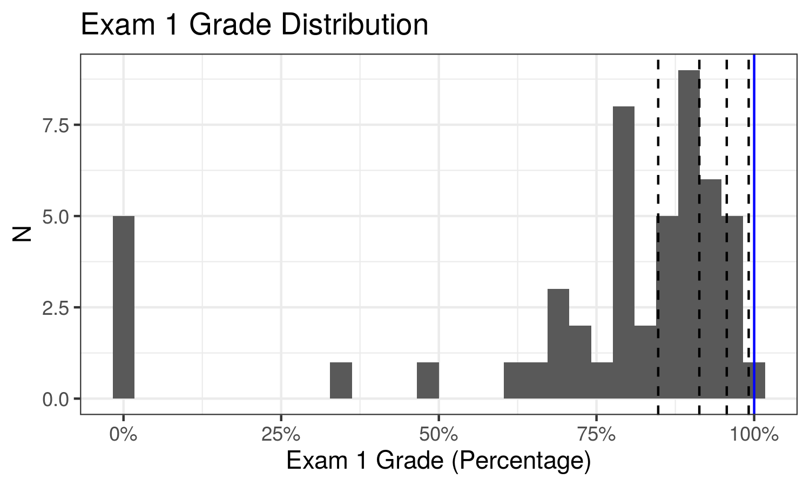

Notes
2020-04-13 | Recorded Lecture
Because the Restoration reaffirmed the foundational truth that God does work in this world, we can hope, we should hope, even when facing the most insurmountable odds. That is what the scripture meant when Abraham was able to hope against hope — that is, he was able to believe in spite of every reason not to believe — that he and Sarah could conceive a child when that seemed utterly impossible.
- Jeffrey R. Holland (GC April 2020)
- Announcements
- Final exam
- Exam administered and submitted through RStudio Cloud
- Open notes, open internet - not open neighbor
- Plan on ~2-3 hours
- Exam opens after class today
- Exam due 11:59pm on Wednesday (2020-04-15) (No late submissions accepted)
- No class Wednesday (2020-04-15)
- HW 5 Solutions
- Final exam
- R Moment: h2o
- Midterm Grades 
- Final Exam Review
2020-04-08 | Recorded Lecture
Because of the Resurrection, we know that these mortal deficiencies are only temporary.
- Dallin H. Oaks (GC April 2020)
- Announcements
- Final exam
- Exam administered and submitted through RStudio Cloud
- Open notes, open internet - not open neighbor
- Plan on ~2-3 hours
- Review in class Monday, April 13
- Exam opens ~5:00pm on April 13
- Exam due 11:59pm on Wednesday (2020-04-15) (No late submissions accepted)
- No class Wednesday (2020-04-15)
- Final exam
- R Moment: RStudio Connect & RStudio Quickstart
- Homework 5 Questions
- Midterm Solutions
- Permutation Tests Continued
- Faithful |
10/l10_faithful.Rmd
- Faithful |
- Bootstrapping and Permutation Testing |
11/l11_bs-perm-comparison.Rmd
2020-04-06 | Recorded Lecture
No matter what kind of storm is battering us — regardless of whether there is a solution to it or whether there’s an end in sight — there is only one refuge, and it is the same for all types of storms. This single refuge provided by our Heavenly Father is our Lord Jesus Christ and His Atonement.
- Ricardo P. Giménez (GC April 2020)
Announcements:
- Homework 4 due tonight at 11:59pm
- Upcoming Schedule
- Midterm solutions and discussion on Wednesday
R Moment: Plumber
Introduction to Permutation Tests

-
- Brothers |
10/l10_brothers.Rmd - Faithful |
10/l10_faithful.Rmd - GPA |
10/l10_gpa.Rmd
- Brothers |
Homework 5 Assigned (Due 2020-04-13 at 11:59pm)
2020-04-01 | Recorded Lecture
Chidi, here’s the thing with stuff. You can look at a problem from every angle and drive yourself crazy, but sometimes, you just gotta huck a Molotov cocktail at a drone and see what happens… I mean, where I’m from, most things blow up eventually. So I learned that when something dope comes along, you gotta lock it down. If you’re always frozen in fear and taking too long to think about what to do, you’ll miss your opportunity and maybe get sucked into the propeller of a swamp boat.
- Jason Mendoza (The Good Place S4 E09)
- Announcements
- Grading for midterm is ongoing and will be discussed next week
- Midterm solutions will be provided next week
- R Moment: goodshirt and bortles
- Homework 4 Questions
- Bootstrap Continued
- Bootstrap coverage |
09/l09_bs_coverage.Rmd - Bootstrap troubles |
09/l09_bs_troubles.Rmd
- Bootstrap coverage |
2020-03-30 | Recorded Lecture
…Alma noted, “Time only is measured unto men.” Because speed is a measure of distance over time, if time becomes less relevant, so does speed. Thus, in eternal things, such as our ongoing progress in becoming like God, direction is more important than speed. In the long run, the direction we are headed matters much more than the rate at which we are moving.
- Kevin J. Worthen (BYU Devotional January 8, 2019)
“Bootstrapping is the practice of estimating properties of an estimator (such as its variance) by measuring those properties when sampling from an approximating distribution.” - Wikipedia
- Bootstrap confidence interval on mean |
08/l08_mean.Rmd - Memory loss |
08/l08_memory.Rmd - Confidence interval |
08/l08_ci.Rmd - Homework 4 is assigned (Due 2020-04-06 at 11:59pm)
2020-03-23 | Recorded Lecture
Within each one of us, regardless of our own unique circumstances, challenges, and even mistakes we have made, there is currently an essence of the divine. It is part of our nature—a part of who we are that does not change.
- Kevin J. Worthen (BYU Devotional January 8, 2019)
- Announcements:
- Midterm opens Wednesday at 12:00pm (noon) MST
- Exam administered and submitted through RStudio Cloud
- Open notes, open internet - not open neighbor
- Due 11:59pm on Friday (2020-03-27) (No late submissions accepted)
- Plan on ~2-3 hours
- No class Wednesday (2020-03-27)
- Homework 3 due Wednesday (2020-03-27) at 11:59pm
- Homework 1-3 solutions will be made available prior to the exam
- Midterm opens Wednesday at 12:00pm (noon) MST
- R Moment: Local Interpretable Model-agnostic Explanations (lime)
- Midterm Review
2020-03-18 | Recorded Lecture
Face your doubts. Master your fears. “Cast not away therefore your confidence.” Stay the course and see the beauty of life unfold for you.
- Jeffrey R. Holland (BYU Devotional March 2, 1999)
- R Moment: cheatsheets
- Announcements:
- Virtual office hours
- Term schedule
- Homework 2 Questions
- Confidence Intervals |
04/l04_ci.Rmd - Simulation study for simple linear regression |
06/l06_regression.Rmd - Homework 3 is assigned (Due 2020-03-25 at 11:59pm)
2020-03-11
… where does God’s light not seek to shine? What field of inquiry can stand apart from questions of ultimate reality? Of divine love? Of God’s design in creation and redemption? To paraphrase a modern revelation, which powerfully echoes ancient ones, God’s light proceeds from His presence to fill the immensity of space and is thereby in all things. Would we dare circumscribe that light? An eminent scholar and Christian believer wrote this of faith and scholarship: “Put most simply, for believers to be studying created things is to be studying the works of Christ.” This insight hardly limits learning. It should set it free.
- J. Spencer Fluhman (BYU Devotional July 30, 2019)
- Announcements:
- Homework Feedback
- R Moment: r2d3
- Simulation Study Outline
- Plotting Review
- The Central Limit Theorem |
03/l03_central_limit_theorem.Rmd - Costume Party
2020-03-09
Yes, you face challenges. But so does every generation. These are our days, and we need to be faithful, not faithless. I testify that the Lord knows about our challenges, and through the leadership of President Nelson, He is preparing us to meet them.
- Stephen W. Owen (GC October 2019)
- Announcements:
- Utah County R User Group
- Homework 1 due today at 11:59pm
- R Moment: Shiny
- Homework 1 questions
- Assessing uncertainty in simulation studies |
03/l03_flipping_coins.Rmd - The Central Limit Theorem |
03/l03_central_limit_theorem.Rmd - Plotting Review
- Homework 2 is assigned (Due 2020-03-16 at 11:59pm)
2020-03-04
I testify that his intelligence is vastly superior in every field to the very brightest mortals in those fields and that his intellect in scope and truth far exceeds all human intellects. I thank him for encapsulating that exquisite mind in both perfect love and perfect humility. His brilliance is not the “catch-me-if-you-can” kind, but a pleading and patient, “Come, follow me.”
- Neal A. Maxwell (GC April 1976)
- Announcements
- If you do not have access to course materials / assignments on RStudio Cloud, click here. If that doesn’t work, send me an email and I’ll make sure you have the appropriate access.
- R Moment: Tidyverse
- Homework 1 Questions
- Introduction to simulation studies:
- “Simulation study” and “Monte Carlo study” are synonymous.
- Represent a real-world process programatically in order to evaluate statistical properties
- Uses include:
- Describing distributions (e.g., mean, variance, quantiles).
- Evaluating point estimators.
- Evaluating confidence intervals.
- Investigating the properties and performance of testing hypothesis procedures.
- Checking the finite-sample statistical properties of estimators and testing procedures that have been motivated through asymptotics.
- and many others…
- Especially useful when theoretical derivations are unavailable, difficult, or intractable.
- Flipping coins |
02/l02_coins.Rmd
2020-03-02
He felt all that was sad, wicked, or bad, All the pain we would ever know. While His friends were asleep, He fought to keep His promise made long ago. Gethsemane. Jesus loves me, So He went willingly to Gethsemane.
- Melanie Hoffman (Gethsemane)
- About me
- Course Syllabus
- Course Schedule
- Out of town:
- April 6 - 8
- Out of town:
- Introduction to RStudio Cloud
- Choose a First and Last Name that will allow you to be easily identified - this is how we match work in RStudio Cloud back to Learning Suite
- Access the course workspace
- All assignments must remain in the course workspace in order to be graded
- Why R is awesome (Stat 123 Review) |
01/l01_review.Rmd - Homework 1 is assigned (Due 2020-03-09 at 11:59 pm)